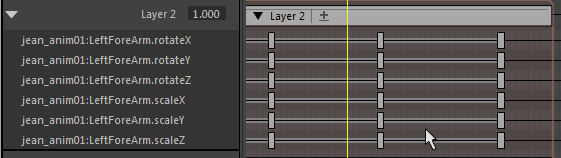

您可以使用时间编辑器中的片段层以非破坏性方式修改现有动画。
在此示例中，您可以使角色跳跃的现有动画并更改跳起的高度，而不改变原始动画文件。
注： 您无法驱动同时包含动画层和片段层的动画，因为这会产生冲突。
注： 如果使用 HumanIK 装备，则需注意一些特殊事项。请参见在时间编辑器中为 HumanIK 角色设置动画中有关片段层的部分。
若要在时间编辑器的片段层上设置关键帧，请执行以下操作：
- 选择要更改的对象/属性。在本示例中，角色的“髋部”(Hips)效应器有助于增加跳起的高度。
根据在视口或通道盒中所做的选择，系统将选择用于设置关键帧的属性：
- 如果未选择任何选项，则为层中的所有属性设置关键帧
- 如果仅选择对象，则为活动层中的这些对象的所有属性设置关键帧
- 如果在通道盒中选择属性，则仅为活动层中与通道盒选择匹配的属性设置关键帧
- 在通道盒中，选择“髋部效应器”(Hips Effector)的“平移 Y”(Translate Y)值，然后在第一个片段上单击鼠标右键。
- 从时间编辑器工具栏中选择“创建(相加)”(Create (Additive))
 。选定属性的动画层将添加到片段。
。选定属性的动画层将添加到片段。
- 单击“片段层”(Clip Layer)图标
 以展开片段层，可看到一个名为 Character1_Ctrl_Hips_Effector.Translate.Y 的层。
以展开片段层，可看到一个名为 Character1_Ctrl_Hips_Effector.Translate.Y 的层。

- 单击片段层以使其变为活动层（确保已在时间编辑器工具栏的“活动层”(Active Layer)字段中将其选定）（也可以在片段层上单击鼠标右键，然后从“片段层”(Clip Layer)上下文菜单中选择“设置为可设置关键帧的层”(Set as Keyable Layer)。）
注： 活动片段层是按照合成定义的。此信息存储在 Maya 场景文件中。请参见场景文件。
- 在动画中向前移动“当前时间标记”(Current Time Marker)，直到角色开始跳起为止，然后在时间编辑器工具栏上单击“设置层关键帧”(Set Layer Key)按钮 。层片段上将设置关键帧。如果要设置零关键帧以定义动画的开头，请使用“设置零关键帧”(Set Zero Key) 按钮。（请参见设置动画层上的对象的关键帧主题中的“设置零关键帧”。）
注： 可以使用标准 Maya S 热键来设置常规 TRS（平移、旋转和缩放）属性的关键帧。
- 接下来，将“当前时间标记”(Current Time Marker)移动到角色落地的位置，并使用“设置层关键帧”(Set Layer Key)按钮来设置关键帧。
- 最后，将“当前时间标记”(Current Time Marker)移动到角色跳起的最高点，并在“通道盒”(Channel Box)将 Y 轴再向上平移一些以创建逼真的飞跃，然后在层上为此设置关键帧。
注：
- 使用片段(Clip)上下文菜单中的“展平层”(Flatten Layers)选项，可将多个动画层合并为单个层。
- 打开曲线图编辑器即可直接编辑片段层的动画曲线。若要执行该操作，请选择片段层，然后单击
 打开曲线图编辑器中的层曲线。
打开曲线图编辑器中的层曲线。
- 如果要将其他对象添加到片段层以细化动画，请在片段层仍处于活动状态时选择通道盒中的属性，在片段层中单击鼠标右键，然后从层片段(Layer Clip)上下文菜单中选择“选择 > 添加当前选择”(Selection > Add Selection)。将为每个选定属性创建层
- 可以通过调整层的权重来调整其影响。请参见设置时间编辑器片段权重的关键帧。
- 活动片段层是按照合成定义的，其信息存储在 Maya 场景文件中。
- 可以通过拖动操作移动片段层上的关键帧。
有关片段层关键帧涉及的更多操作，请参见将动画层添加到时间编辑器。